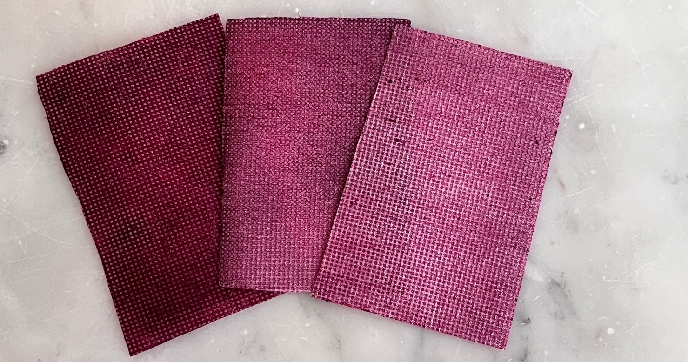

ชาดทาปากของเรานั้นดียังไง?
ชาดทาปากของเรานั้นมีการดัดแปลงจากชาดโบราณ โดยมีการเปลี่ยนวัสดุจากกระดาษไขที่ใช้เวลาในการย่อยสลายเวลานานเป็นกระดาษสาชนิดที่ใช้เวลาย่อยสลายในเวลาที่สั้น อีกทั้งเป็นเครื่องสำอางที่ทำมาจากสารธรรมชาติ100%
วิธีการใช้งาน
สามารถใช้ง่ายได้เพียงนำน้ำมาทาปากและนำชาดมาทาบปาก หรือนำน้ำมาลูบที่ชาดแล้วทาบที่ปากได้เลย โดยสามารถเพิ่มความเข้มของสีได้ตามใจชอบ
สีของเราแบ่งออกเป็น3สี สีกุหลาบ กระเจี๊ยบ และสีผสม โดยแต่ละสีจะให้ความเเข้มและโทนสีที่แตกต่างกัน